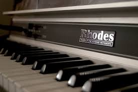

| Photo | Description | Price |
|---|---|---|
|  | The Rhodes piano is an electro-mechanical piano, invented by Harold Rhodes during the fifties and later manufactured in a number of models, first in collaboration with Fender and after 1965 by CBS. It employs a piano-like keyboard with hammers that hit small metal tines, amplified by electromagnetic pickups. | $1400 |